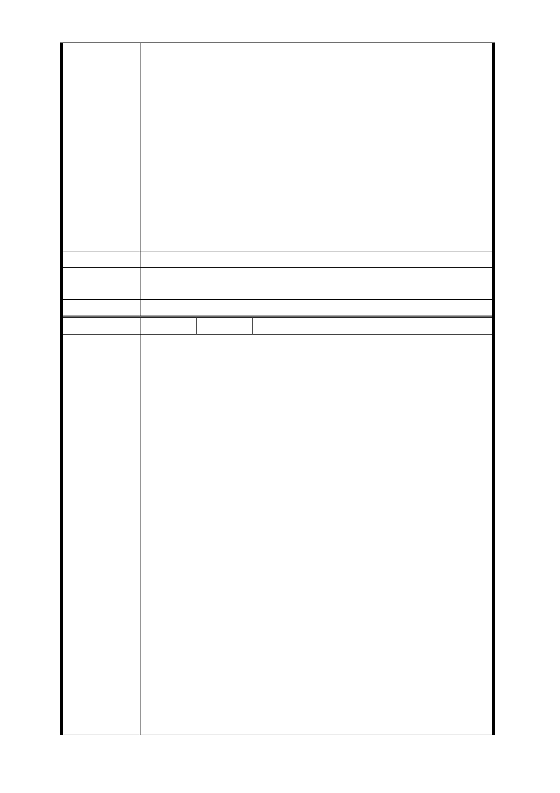

三、 身為本市市民，對市府提出凡有關能繁榮地方及利於
地方長遠發展之相關政策理應全力支持與配合，惟市
府對本案之受影響之土地所有權人所提之未來補償配
套，卻未能基於公平正義為合理之分配，為此本人時
常擔憂需賴以維生之居住空間飽受拆除威脅而長期身
心備受煎熬，希冀懇請貴局處為中華民國公家機構應
維護中華民國憲法保障國民之基本生存居住權益。
四、 基於上述，本人就所持有青年段一小段 013-0000 地號
土地被納入 LG03（捷六）車站開發一案，堅決表達反
對之立場，特此函告；並請貴會日後於辦理本案相關
事宜時，應依法詳細告知受影響而就本案持反對立場
之地所有權人，於法律、行政上所得踐履主張之權利
及救濟途徑，以符法治之精神，敬請查照！
建議辦法
市府回應
意見
同編號捷六－4 回應意見。
委員會決議 同編號交一－1 委員會決議。
編 號 捷六-11 陳情人 梁○翔(102.8.13)
致台北市政府都市發展局的委員們您們好：
我是 LG03 捷六的陳情人之一，昨天在旁聽室外的電視一直看
著會議的進行，對於捷運局科長的簡報我們這邊完全沒有更
動表示遺憾。最後等到住戶要發言時，我被唱名的小姐擋住
說我沒簽名沒辦法發言（或許有延誤她的下班時間，但對我
家來說是拆與不拆的大問題），所以只好利用網路信箱來作陳
情。
主要的訴求有兩點
1、設置地點
本人和捷五的住戶意見相去不遠， 以簡易出口和通風口為主
。
如果可以在萬大西藏路口的交叉點設制，又或者可以在新建
陳 情 理 由 成的復華花園新城設置（附件 1、2）的話就不用讓這麼多人
基本的住都受到影響，若是都不可行的話請看第 2 點。
2、LG03 存在的必要性
（1）對外：這邊是純住宅區，沒有特別的事物可以吸引外
來遊客。
（2）對內：我們這邊聯外交通非常方便，附近有火車站、
龍山捷運，公車站可以連到板橋、中永和、三重。並
沒有興建捷運的特別需求。所以若是第 1 點不可行的
話，請捷運局考慮廢除本站。
委員，大多數的人努力，輩子就是要建立一個完整的家。
這個家不管是生理、心理都是一個牢固的避風港，還有可愛
的家人一起；
你也瞭解現在房價高漲、如果要被迫搬離的話，以我們一般
- 117 -